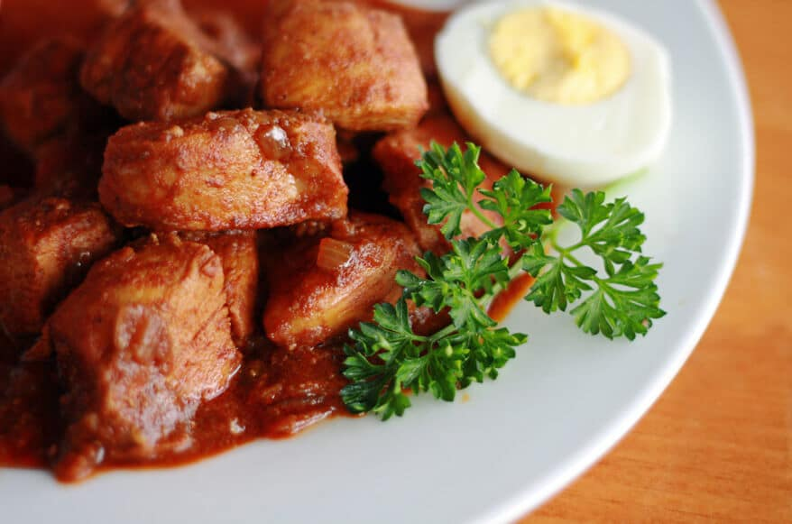

DORO RECIPE

Ingredients
4 red onions medium-sized
4 pounds chicken I used skinless legs
3/4 to 1 cup Vegetable oil or any good cooking oil of your choice
2 tablespoon kibbeh Ethiopian spiced butter
2 tablespoons tomato paste optional
6 hard-boiled eggs
2 tbsp garlic minced
2 tbsp ginger grated
1/4 cup water
salt to taste
1/2 cup berbere spice
1 cup vinegar mixed with 2 cups water to clean chicken
Method
1.Clean the chicken very well and soak it in water and vinegar. Rinse and drain when ready to use.
2.Boil the eggs, peel, and set aside.
3.Finely dice the onions. I like to use the food processor to save time.
4.Add the onions to a pot over low to medium heat. The onions will sweat and create the water they will simmer in. Continue to stir the onions to prevent burning until they change color (light pink color). About 30 to 40 minutes. When they are done, the water will evaporate, and the onions will begin to stick to the bottom of the pot.
5.Stir in the oil, minced garlic, ginger, salt, and berbere spice. Stir well.
6.Add kebe (Ethiopian spiced butter) and the tomato paste and stir.
7.Slash the chicken in two or three places. This step is optional, but it will allow the flavors of the stew to penetrate the chicken. Add the chicken inside the stew and stir.
8.Add the water and cook on medium heat for 30 to 40 minutes stirring occasionally to prevent burning. Continue to cook until the stew thickens up and the chicken becomes ender.
9.Stir in the eggs and leave to cook for another 15 to 20 minutes.